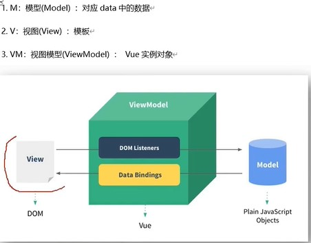

1.架构模型：model（对应data中的数据）-view模板-viewmodel（vue实例对象）
2.在简单案例中，页面显示的div即为View，data中的数据为Model，而new实例化的Vue，即为最核心的ViewModel。
3.Data中的所有属性都出现在vm身上，vm身上的所有属性，及Vue原型上所有的属性，在vue模板中都能直接使用。
---------------------------------------------------

名字：{{name}}
电话：{{tel}}